Hey there! I'm Jonathan Li, a rising junior in high
school. I'm really into robotics and ML, and I've been building
cool things ever since I was young. Scroll down to view some of my work!
GitHubYouTube
I'm working at the DARoS lab at UMass Amherst for the Dash humanoid (collab w/ UIUC and U Notre Dame) and Forte arm!
I so far helped with IsaacLab & mjlab RL and IL, STM32 & Teensy stuff, motor control & GUIs, PCB design, CAD, soldering, etc.
Some Projects I'm Proud of! (I tried my best to classify), more on OS 2024 section below
Full video link to come!
I made Casper, basically Mini Casper but with 3 DOF per leg (added abduction joint) so it can strafe. Casper is larger and I used aluminum (from Ace which I drilled and cut) for the body.
I'm still using an Arduino, and added a shoebox cover so it looks "cooler" and a simple ultrasonic sensor which I used to shift gaits, step heights, speed, etc. when it senses a large obstacle.
I made Mini Casper (name inspired by the MIT Mini Cheetah), my first quadruped with only 2 DOF per leg. Here I experimented with going over obstacles and running on rocks.
I used IK and parametric equations to make the stepping trajectory a sine wave. I found the trot gait to be the best balance between
speed and stability (I tried others like crawl, pronk, & bound).
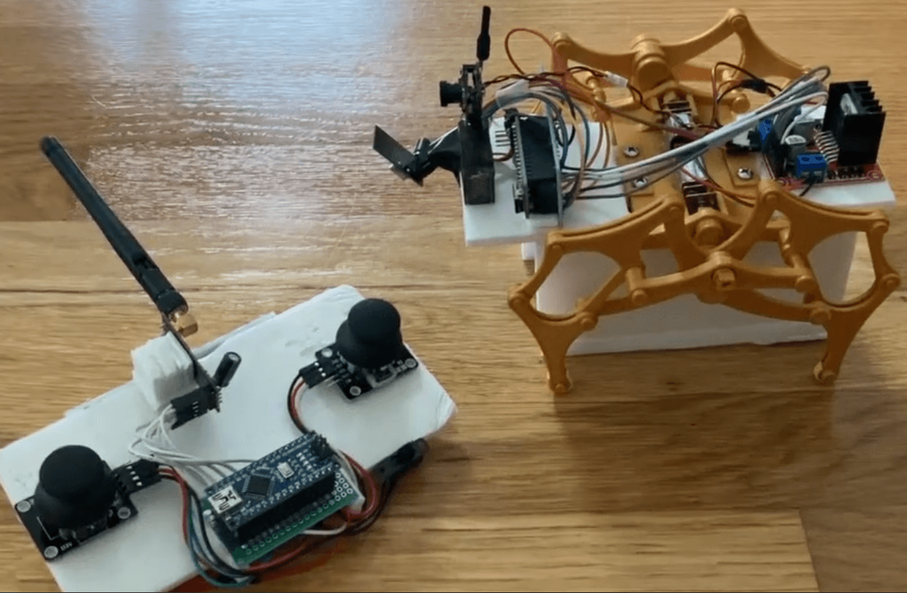
My RC FPV strandbeest using NRF24l01 modules. Goal was to mimic an animal so you could
use it to monitor species. I made this in 8th grade using an Arduino nano and N20 motors,
and hand soldered all the PCBs. A 10 uF capacitor is used for the NRF modules to help with power spikes.
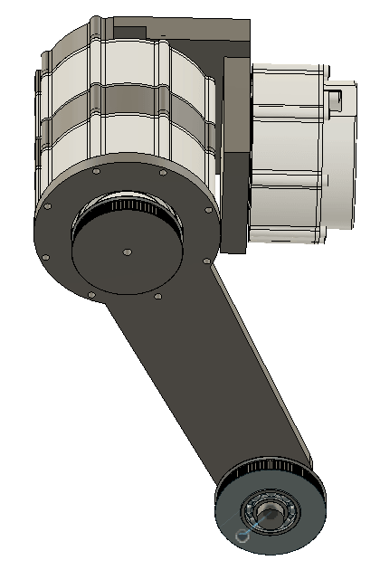
My WIP CAD (I kind of just ditched the project since cost is way too high)
for a 3 DOF leg inspired by the MIT Mini Cheetah, but I'm using RobStride actuators.
Brain tumor and pneumonia detection using CNNs in PyTorch (using Kaggle datasets). I wanted to see how ML could be used in healthcare.
Little DDPM, I learned about the U-Net architechture and denoising process.
VQA using the moondream VLM for live prompting via a webcam.
VLA models are really useful for autonomy, and I also used it on my Jetson
for scene understanding for robots.
I used the IMX219-83 stereo camera with a Jetson to create disparity maps.
I made a gesture controlled mouse using Google's Mediapipe API for hand
landmarks & PyAutoGUI to control the mouse.
Displaying 3D models on Hiro (or other fiducial markers like QR codes)
using AR.js.
I used RL (specifically Q-learning) for a "car" (yellow rectangle) to
reach a goal (green circle). The trained model is stored in a pickle file.
I used the NEAT algorithm for CartPole.
I created a web page using OpenCV.js to show computer vision
algorithms! Typically OpenCV is with Python or C++, but this uses JS
so no Python backend needed!
ORB feature detection and mapping (BF matcher, FLANN). This is used a lot for VSLAM.
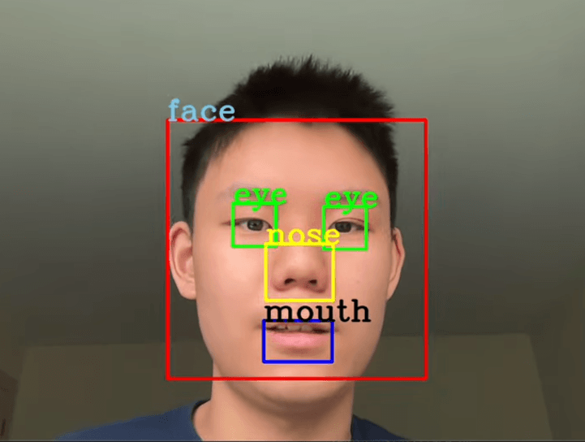
Facial feature recognition using Haar Cascades.
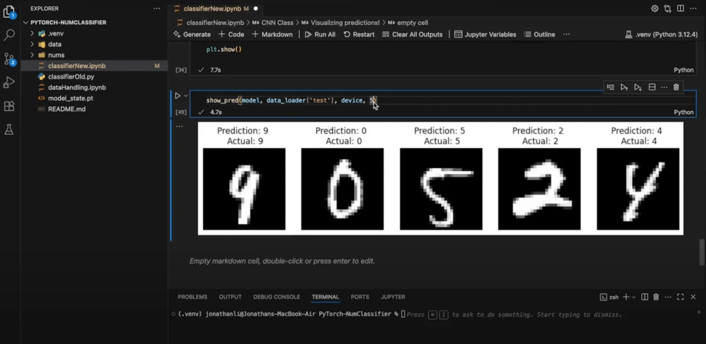
PyTorch digit classification using a CNN. Data is from the MNIST dataset.Sentiment analysis using sklearn. I'm using the IMDB movie review dataset from Kaggle.
I used GroundingDINO and PyTorch for FRC 2025 algae and coral detection.
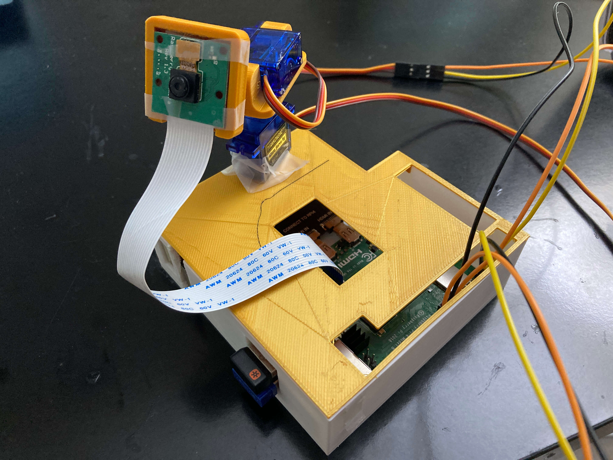
I made a Raspberry Pi facial recognition security camera in middle school
that sends alerts when my mom is detected. I designed the case and servo mounts in Fusion.
I used HOG.
ArUco marker pose display (also one of my Open Sauce 2024 projects).
Played w/ YOLO11
LiDAR connected to Raspberry Pi real time data visualization in RViz
via SSH
I learned the basics of ROS! ROS is used in higher level robotics in universities and sometimes even industry.
Gazebo & RViz sim shown with LiDAR.
I made an autonomous Raspberry Pi robot that delivers snacks using voice commands, follows AprilTags, and picks
up objects using YOLO. It uses a vosk model for speech recognition and YOLO converted to the NCNN format to run at a useable speed.
I'm using monocular cameras, so I got depth by measuring the bottle width, finding my focal length (by measuring from a known distance),
and plugging into dist = (focal len * bottle width) / px width found by using simple trig.
I converted my robot to the left into an auto-aiming trashcan. I'm lazy.
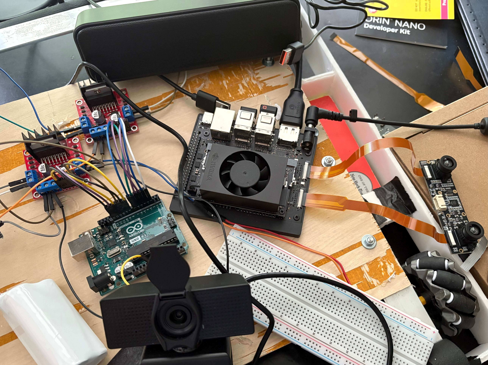
Similar household robot but using a Jetson and mecanum wheels for strafing
(chassis from my linear slide robot down below). I also used a bigger speaker.
My custom Arduino swerve drive I made during 8th grade summer. I DIYed everything except for raw metal.
The aluminum is from Ace and I manually cut and drilled it. Check out my YouTube video to see more on my 3D-printed module design!
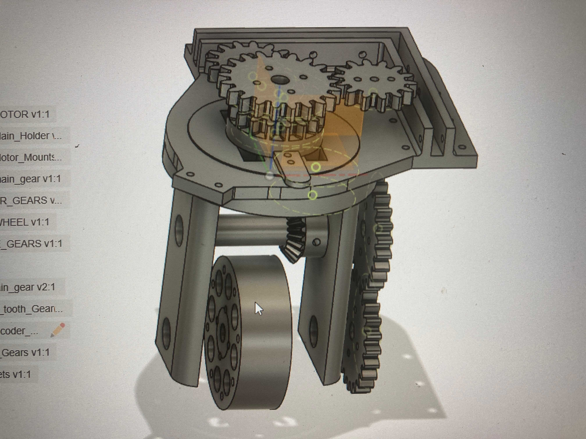
(Heres my swerve module CAD).
I made a Rocker Bogie suspension rover inspired by the mars rover.
It's just using an Arduino, and I added an ATGM336H GPS and HMC5883L compass for waypoint nav.
The aluminum is from Ace and the joints and wheels (TPU) are 3D printed, I designed it in Fusion.
I made a treaded robot using exercise bands. It can go over large obstacles but is simpler and more compact than
my rocker bogie rover.
I made an RC wheel inverted pendulum that uses an MPU6050 and a complementary filter. The frame is from my old 3D printer and the wheels are 3D-printed TPU.
I'm using an Arduino. It took a while to tune the PID gains.
I made (very) odd electric scooters and skateboards in middle school. The wood and steel axles are from Home Depot and I
used my dremel and hand saw to cut them.
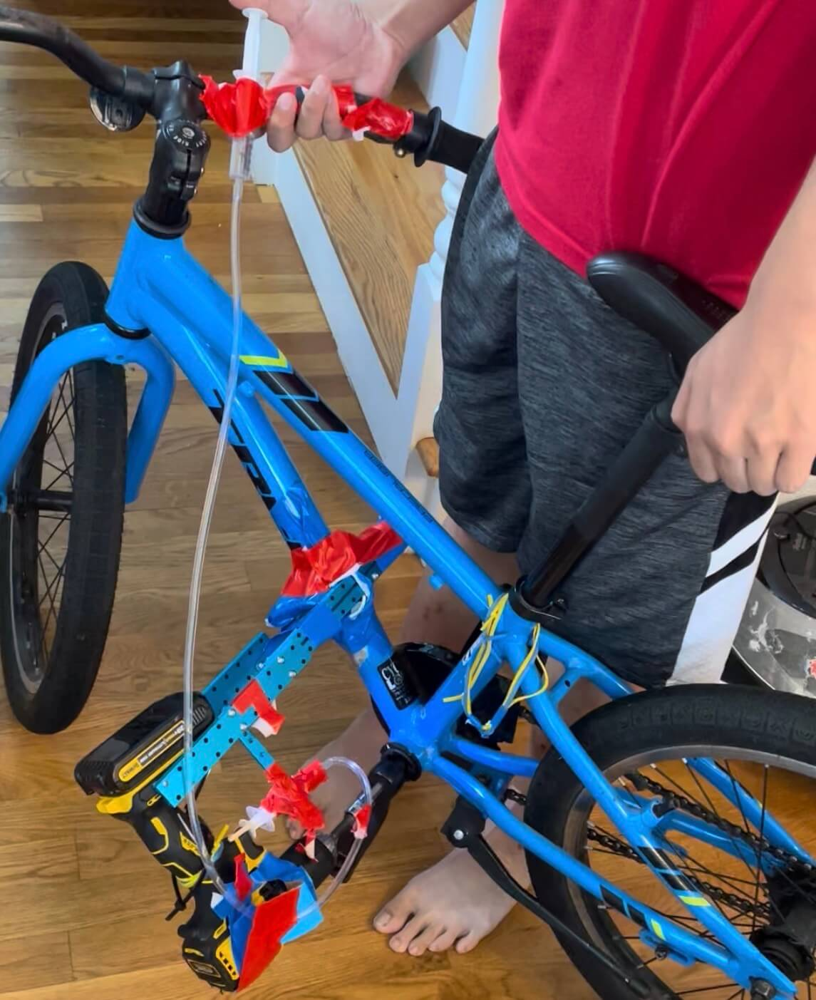
Drill powered bike I made in 7th grade using syringe hydraulics...
Arduino state-machine based autonomous robot to throw away trash with a linear slide. I used mecanum wheels
since I wanted strafe capabilities but less complexity than say swerve or crab drive.
I made this in 8th grade. The aluminum is from Ace and I designed and printed the claw and parts for the linear slide.
I made this ultrasonic sensor motion lamp for my mom to make her life easier,
especially for when she needs to get up at midnight. I made this in 8th grade.
The frame is 3D printed (I designed in Fusion) and I'm using an Arduino to control a relay for the lightbulb.
I made this simple ultrasonic sensor roomba with a spinning toothbrush head in middle school. I'm using an Arduino nano.
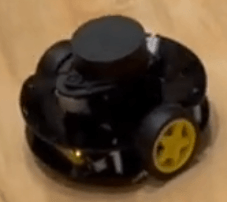
Arduino roomba using LiDAR (RPLiDAR A1M8), no SLAM.
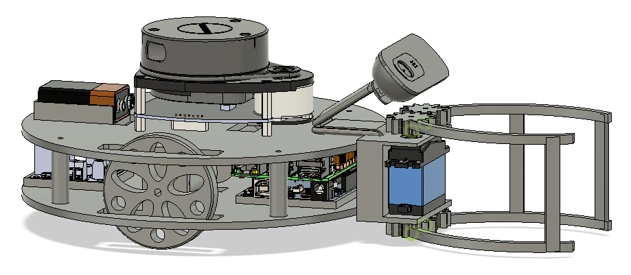
Here's the general CAD of my LiDAR roomba.
I made this AC voltage detector
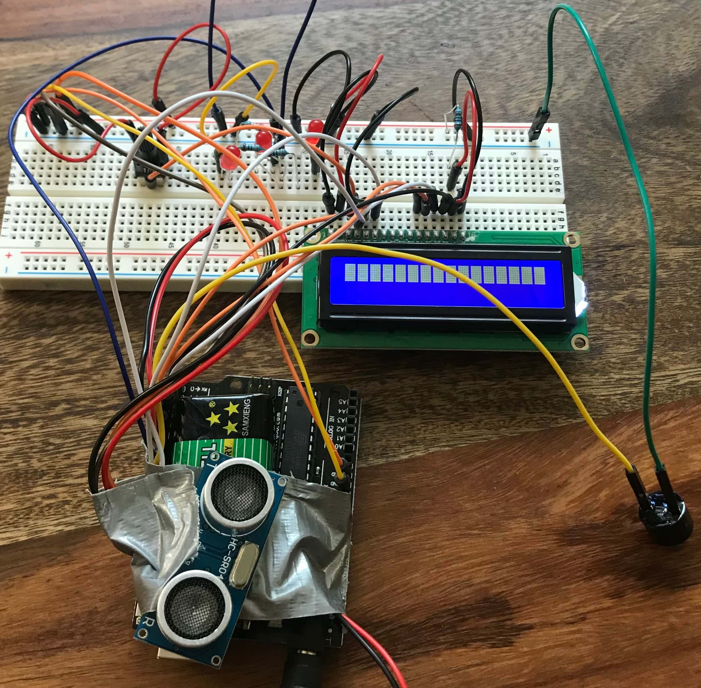
This was a "security alarm" I made in elementary school. It uses an ultrasonic sensor to detect motion and
then a piezo buzzer and LEDs go off, and an LCD displays some text. This was my first ever Arduino project.
I made this fast mini bottle cap pickup robot using N20 motors. (If there was a container the bottle caps wouldn't fall out,
imagine the robot as a box) - this is just the intake mech. I spent a month designing it in Fusion to be as neat and compact/light
as I could get it.
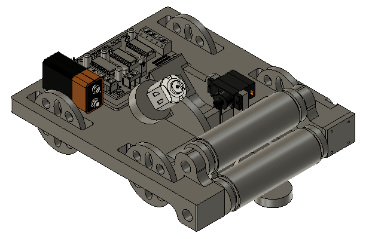
Here's the CAD of my bottle cap pickup robot.
LED disco...
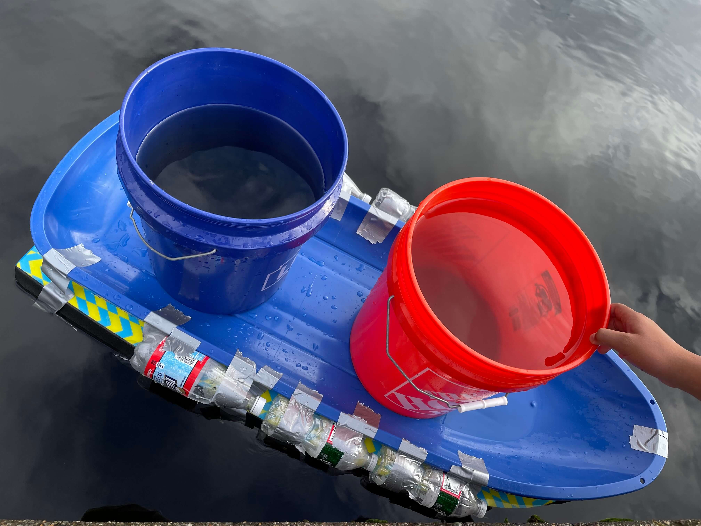
I made a plastic bottle raft/boat in 6th grade with a sled and bottles I got every day from school
but my mom didn't allow me to actually sit on it
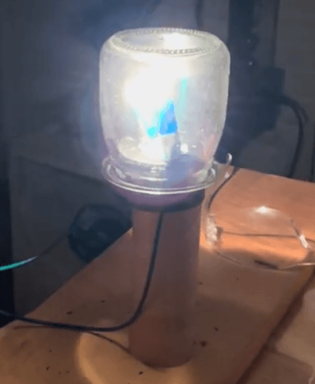
I made a lightbulb in middle school using graphite and a glass cup with a 3D-printed TPU seal
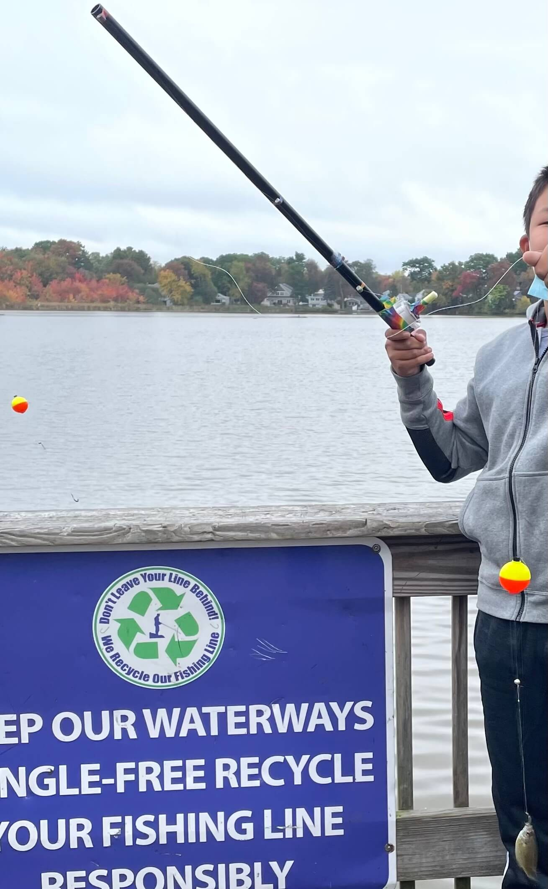
I made a fishing rod in elementary school using a random metal pole, straws, and a tape reel as the "spool"
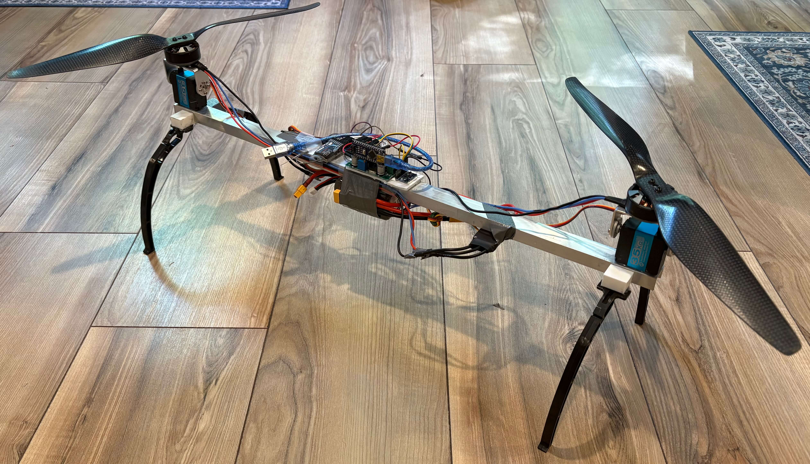
My thrust vectoring Bicopter using an Arduino Nano and MPU-6050.
I wrote my custom flight controller using a complementary filter and cascaded PID loop structure.
The 2 servos tilt the rotors.
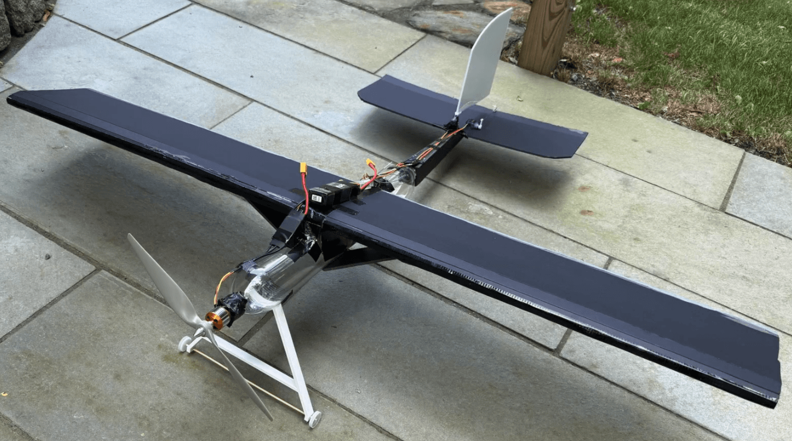
I made a ton of model planes and competed and coached SciOly Flight in middle school
(I was the main coach for our team and got our alternate teams to come in first!).
Here's an RC plane I made recently, see here.
I used a Clark Y airfoil. Landing gear 3D printed, it has a screwable tail for easy transport.
I made Pioneer V3. I used carbon fiber props and 3508 BLDC motors for heavier lifting weight.
It's also using an Arduino, but since it's larger less frequent IMU updates are needed.
I used a 200 Hz loop. Motor mounts and center 3D-printed, aluminum from Ace Hardware. Weighs ~3.8 lb.
I added a dropping mech to my first Arduino quadcopter I made in 8th grade and used it to drop food.
I noticed during the winter rabbits and coyotes were starving so I thought this could be used to
prevent animal starvation. Of course you could use it to drop anything, like agriculture uses and so on.
I made a passive wing morphing mech for one of my rubber-band powered ornithopters (I also made dragonfly versions w/ pairs of wings, look right).
This improves efficiency by creating less drag on the upstroke, and some universities already did this.
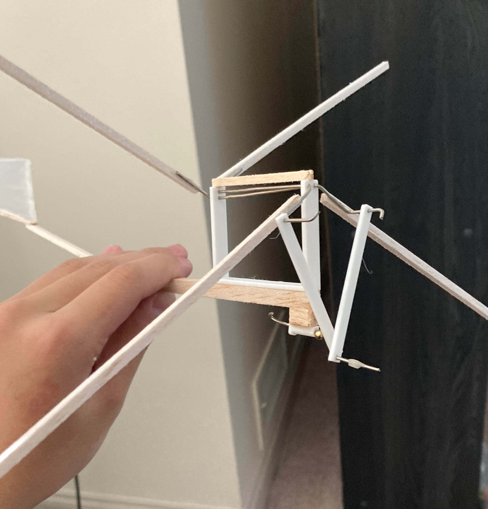
My dragonfly ornithopter mech.
I made a super capacitor monocoper/mapleseed inspired by nature, the gyro stick passively stabilizes it.
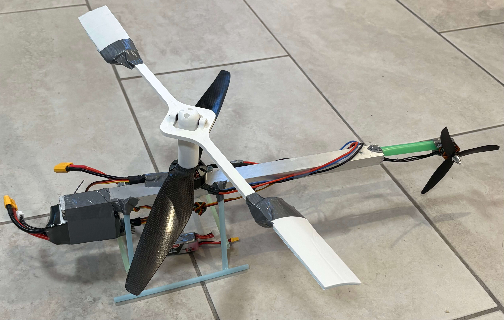
My simple RC helicopter using only flybars for stability.
I designed it in Fusion and went through a lot of iterations to make the flybars sturdy due to centrifugal force.
See here for the first (actually last) test flight.
I made a water rocket using a ball pump. The rocket is just a plastic bottle
with fins + a nosecone that deploys the parachute.
I experimented with gyroscopic precession in helicopters.
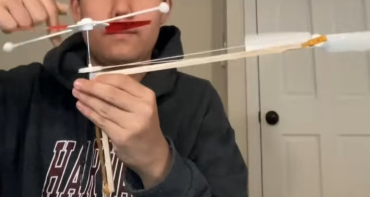
I made a rubber band powered heli with a tail rotor.
See here.
I made a simple model rocket in middle school, no thrust vectoring.
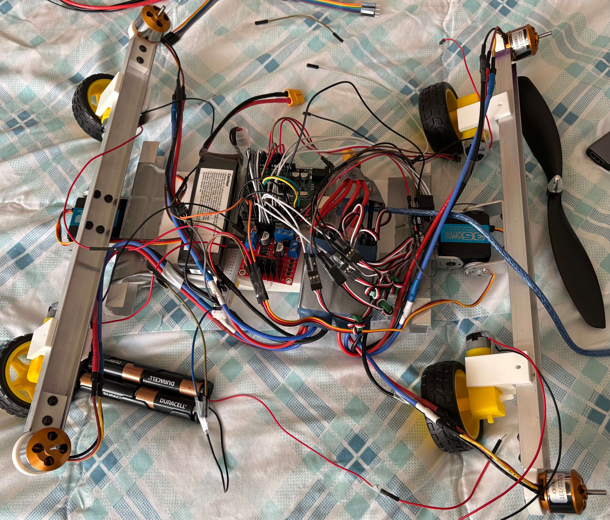
This is my hybrid quadcopter/car prototype inspired by ATMO by Caltech.
This was my first ornithopter, I used grocery plastic bags for the wing membrane. Crankshaft 3D printed.
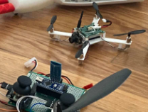
Tiny FPV drone, one of my OS 2024 projects.
I made Pioneer V2 in only 20 hrs! Here I used it to help plant seeds for my mom.
Sorry for the video quality...you may be able to see the seeds falling.
I converted my custom swerve module into an arm so 2 main motors (yaw and pitch) are at the bottom.
This could help reduce inertia and be more efficient.
2D IK demo, it's sort of like a SCARA arm.
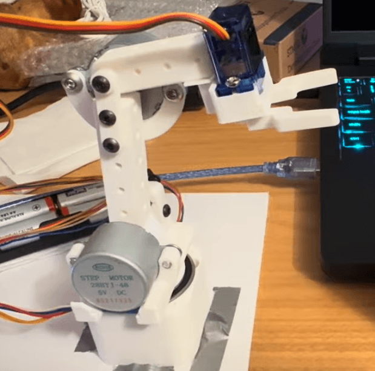
Mini 3D printed 3 DOF arm (not my design, from Thingiverse) but I'm using an STM32. It's very silent because of the small stepper motors.
6 DOF 3D-printed arm using an Arduino, I made this in 7th grade. I printed it on my first FDM printer.
I made a simple but fairly fast mini autonomous race car just using ultrasonic sensors. I experimented with slowing down before accelerating near turns.
I was inspired by F1Tenth. I'm using a 1000kv BLDC drone motor geared down and it works surprisingly well. The only limitation was the ultrasonic sensor
updates not being fast enough so this is low speed for the car. I designed it in Fusion.
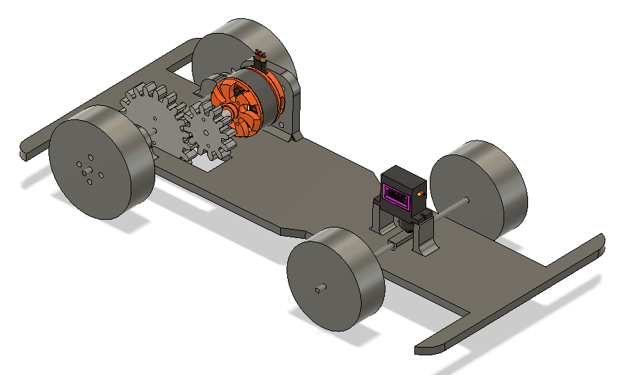
Here's the general chassis CAD for my F1Tenth inspired roboracer.
I used Canny edge detection and the Hough Transform for lane detection in OpenCV for autonomous driving.
I made an ESP32 controlled car (and boat) in 7th grade. I learned about the ESP-NOW protocol.
I made this fast RC square thing in middle school.
I made a tiny state machine robot using an MPU6050 in 8th grade so it can drive straight and resist external disturbance.
I tuned PID quickly after making my first quadcopter.
I added a flywheel to my line follower in 8th grade (using IR sensors) to launch bottle caps. One of my OS 2024 projects.
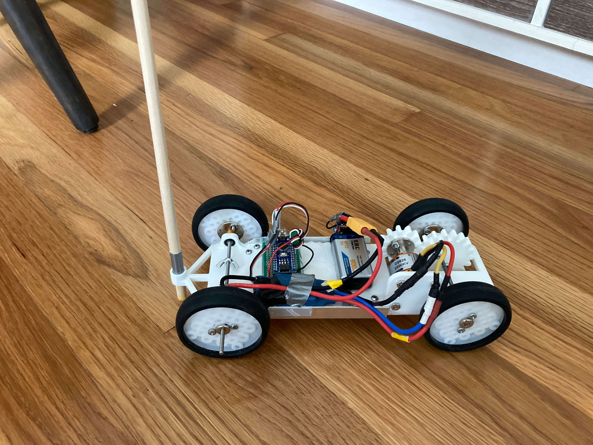
My prototype for SciOly EV in 8th grade. I designed it in Fusion and just used a wingnut braking mech.
I later on modified this design (same 1000kv BLDC motor) for my F1Tenth inspired "racecar". I used an Arduino nano.
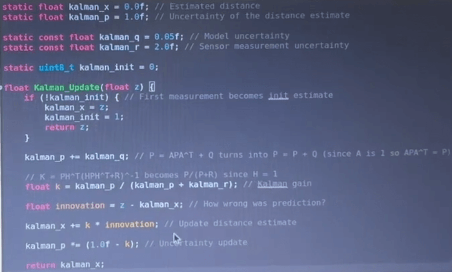
I implemented a simple Kalman Filter on an STM32 for IR sensor distance measurements.
See here.
This was my first RC car I made in 7th grade! I used hot glue for the servo and legos for some parts...
My rubber band powered car that could go 4 laps across my school gym. I used low torque gearing and wound a rubberband
like you would for a model plane so it lasts long with consistent torque. I made this in middle school when I didn't think
SciOly wheeled vehicle was that fun since I thought the competition would be cooler if it was for a longest travelling car.
I 3D printed a model piston engine and just drove it with a cheap brushed motor for a model car.
I made a large RC boat in middle school that could be used for water missions. I used my DIY foam cutter to cut the foam.
I designed (in Fusion) and 3D printed the servo to rudder mount which also held the BLDC thruster.
I made a unique battlebot in middle school that launches bottles. Same mech as the water rocket but w/o water, servo to release the pressure.
I designed and 3D printed the chassis to hold the ball pump/PVC pipe launcher mech to mount everything.
I played with a flex sensor (just a variable resistor) to control a servo. I used this as a simple glove control mech.
I made this sketchy brushed DC motor in 7th grade.
I made an "oscilloscope" using an STM32, it reads data from a potentiometer using ADCs and plots on a Python GUI.
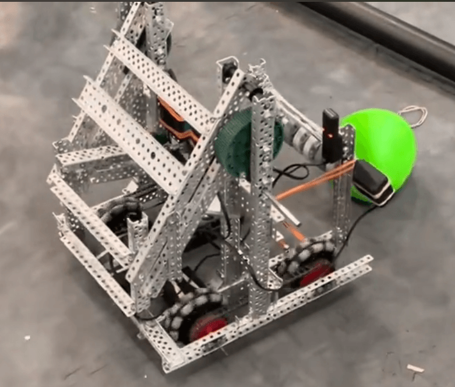
1 of my VEX Over Under robots I made in 7th grade summer. It expands its hanging mech using a 4 bar linkage and launches rubber bands (it looks cool transforming)
See here (I want to keep as few videos as possible here to save room).
1 of my VEX Spinup bots I made in 7th grade. It has the intake and flywheel both at the front.
My other VEX Spinup bot I made in 7th grade. It has an intake on the back and flywheel up front.
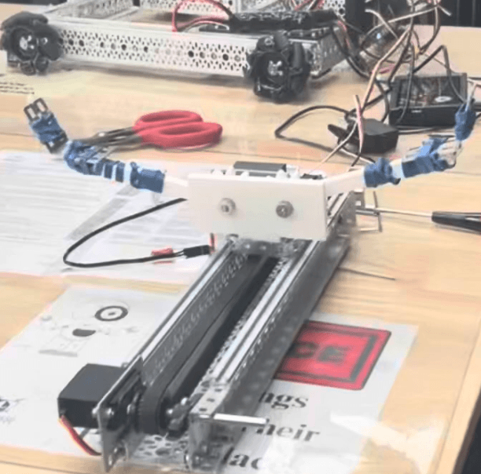
This was my first super simple GT pulley driven "linear slide" I made for middle school FTC. I also designed the sketchy claw in Fusion.
I made a simple 2D Java game in 6th grade. I used LibGDX and custom designed the sprites in GIMP.
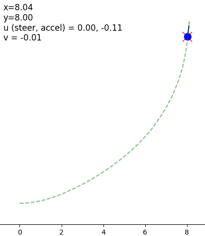
I learned about MPC (Model Predictive Control) during my internship and implemented a very simple
learning demo in Python.
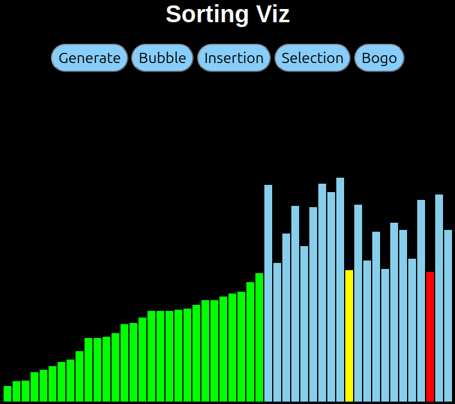
I made a simple sorting algorithm viz (not many options rn) using HTML, CSS, and JS.
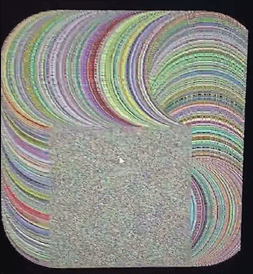
I was following a Java course for 3D game dev in middle school and thought this could be used as a cool drawing thing.
See here and
here.
I was into Spiderman in elementary school and made a "web shooter". The straw
is a spool for the string and I used a skewer with a magnet as the main projectile
to stick to magnetic objects.
My sketchy gravity powered ping-pong ball launcher for middle school SciOly.
I designed and printed the crank mech to angle the barrel.
My marble roller coaster for middle school SciOly. I designed and printed the tracks. Heres a demo of the far air jump and funnel.
I have many more projects, these are just a few. It's kind of a pain to list them all.
My Open Sauce 2024 Experience!
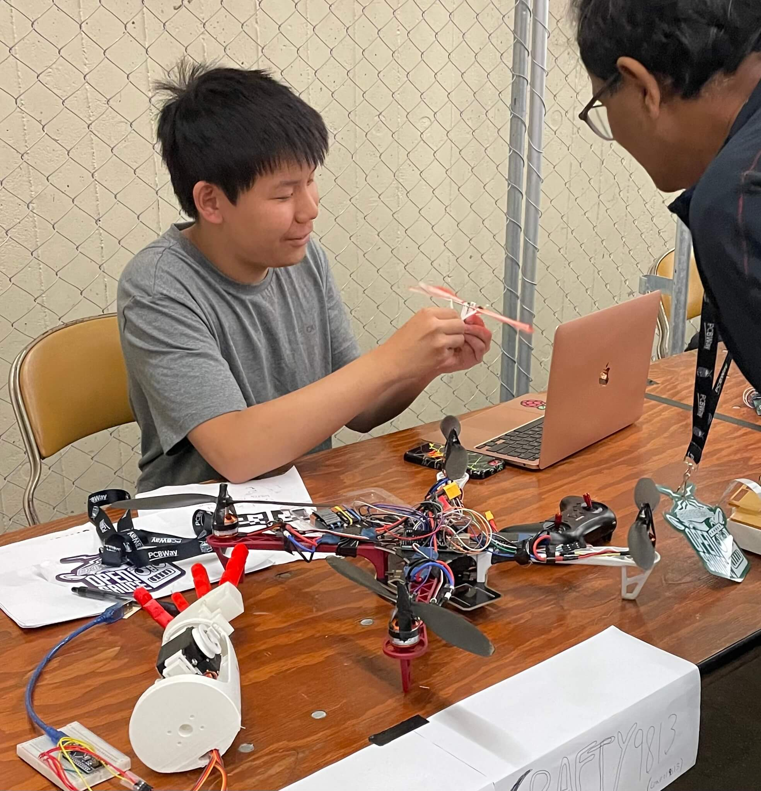
My booth! Me explaning a dragonfly ornithopter mechanism which many
found interest in (even a professor at MIT!) This simple mech could be used for tiny drones,
although
I'm not too sure if it would be more efficient than just using
propellers.
At my booth I showed my: Arduino quadcopter, 3D-printed humanoid hand,
line follower, facial recognition on a Raspi, ornithopter, ArUco marker
detection, HC-05 bluetooth RC car, and tiny FPV drone. I met famous people like Veritasium,
see here and
here!
Visiting Boston Dynamics!
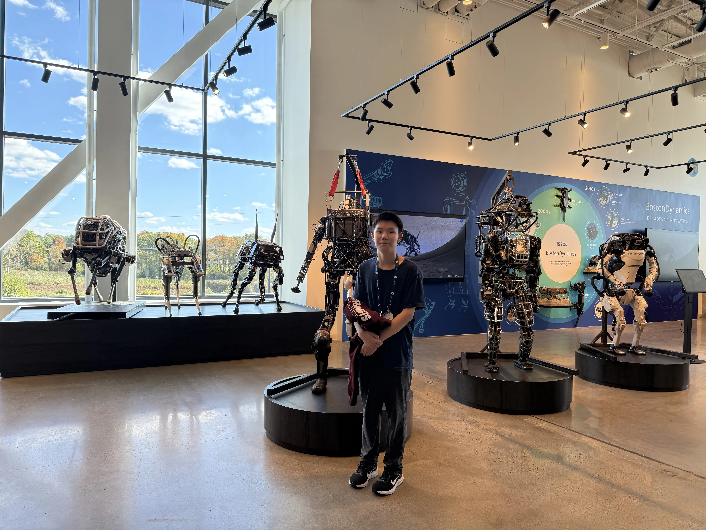
I got to visit BD's headquarters in Waltham, MA! It was super
fun seeing their robots & driving some of their quadrupeds. I saw how Spot had stereo cameras on each side.